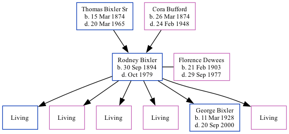

Rodney Jay Bixler 1894 - 1979 [ Home ] | [ Calendar ] | [ Surnames Index ] | [ Family History ]The eldest of 12 children of Thomas Bixler Sr (a farmer) and Cora Bufford Rodney Bixler , the fourth cousin twice-removed on the mother's side of Nigel Horne , was born in Fort Wayne, Allen, Indiana, USA on Sep 30, 18941,2,3 and married Florence Dewees (with whom he had 6 children: Rodney J , Deloris M , Erma F , Rosemary , Rev George Edward and Alice M , along with 5 surviving children) in Vigo, Indiana, USA on Jul 19, 19192 .
Throughout his life, Rodney lived in several places: in Washington, Owen, Indiana on Apr 15, 19107 ; in Clay, Owen, Indiana on Apr 1, 19305 (the same place as his mother had been living on Feb 10, 1920); and in Lafayette, Owen, Indiana in 19404 and on Apr 1, 19406 .
He died in Oct 1979 in Gosport, Owen, Indiana1,3 .
Parents Thomas Isaac was born on Mar 15, 1874Cora Pearl was born on Mar 26, 1874Children Rev George Edward was born on Mar 11, 1928Citations Social Security Death Index - Findmypast United States Marriages - Findmypast United States Obituary Notices - Findmypast US Census 1940 - Findmypast US Census 1930 - Findmypast (was age 35 and the head of the household) US Census 1940 - Findmypast (was age 46 and the head of the household) US Census 1910 - Findmypast (was age 15 and the son of the head of the household) Media Newspaper clipping - 20 Jun 1898 Social Security Death Index - USBMD/SSDI/309384932 US Census 1930 - USC/1930/004950638/00008/021 US Census 1940 - USC/1940/1455745377 United States Marriages - FS/MAR/40025872/1 United States Marriages - R_22714407424 United States Marriages - R_22714407424/1 United States Obituary Notices - US/TRIB/035380810 Family Tree Interactive Map
Map
Generated by ged2site . Last updated on Feb 18, 2025